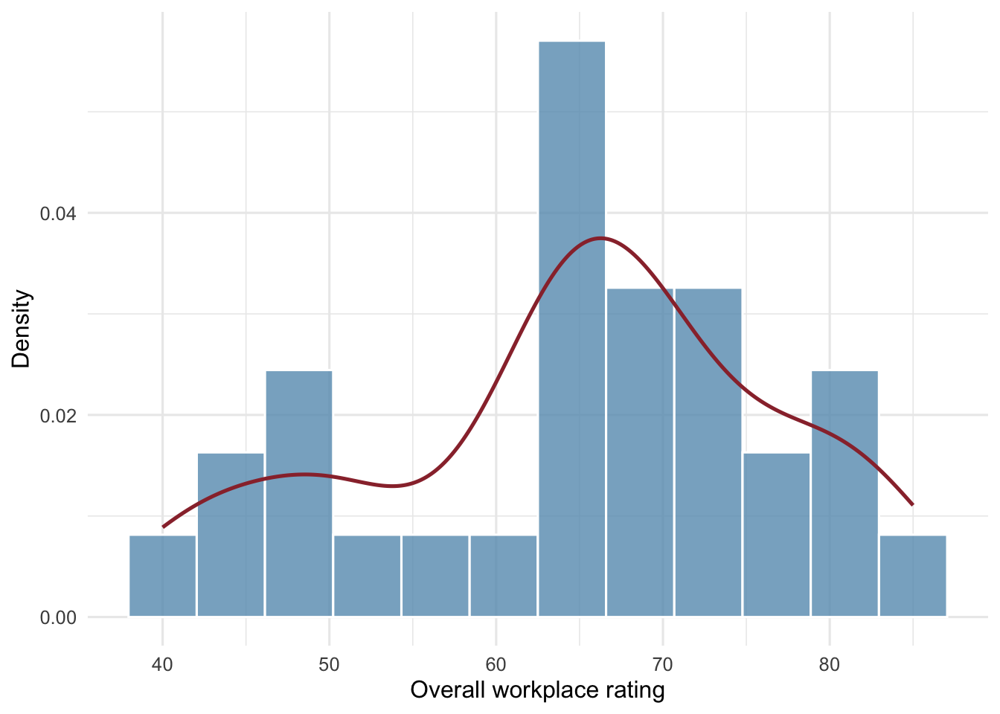
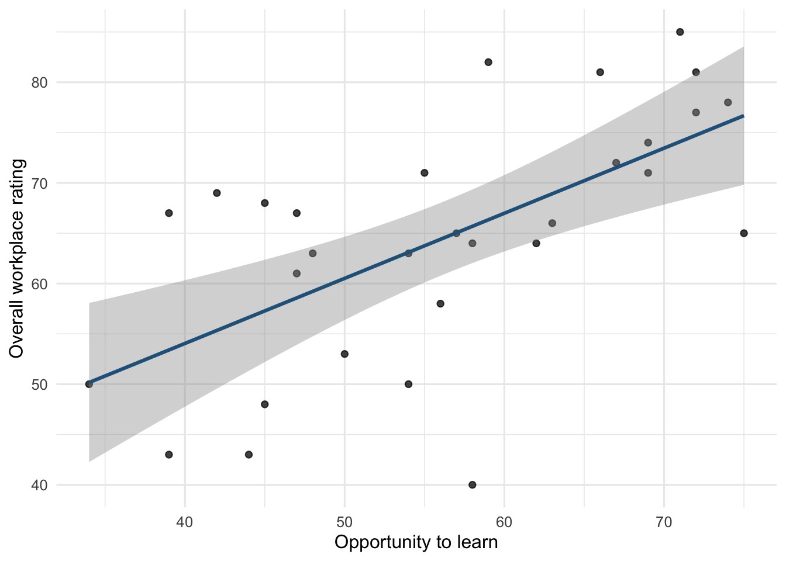
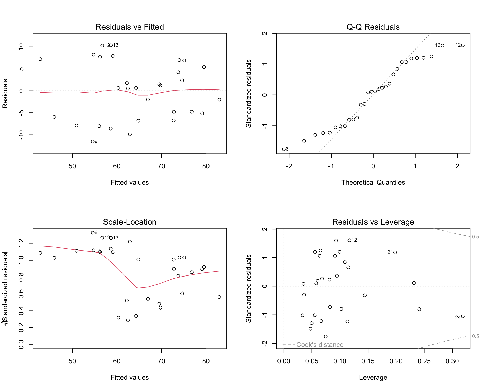

Code
library(dplyr)
library(tidyr)
library(ggplot2)
library(broom)
library(performance)
library(gt)library(dplyr)
library(tidyr)
library(ggplot2)
library(broom)
library(performance)
library(gt)# Use the same complete-case sample for every regression model.
dat <- attitude |>
select(rating, complaints, learning, raises) |>
drop_na()
n <- nrow(dat)descriptives <- dat |>
summarise(
across(
c(rating, complaints, learning, raises),
list(mean = mean, sd = sd, min = min, max = max)
)
) |>
pivot_longer(
everything(),
names_to = c("variable", ".value"),
names_sep = "_"
)
descriptives |>
gt() |>
tab_header(title = "Descriptive statistics") |>
cols_label(
variable = "Variable",
mean = "Mean",
sd = "SD",
min = "Minimum",
max = "Maximum"
) |>
fmt_number(columns = where(is.numeric), decimals = 2)| Descriptive statistics | ||||
| Variable | Mean | SD | Minimum | Maximum |
|---|---|---|---|---|
| rating | 64.63 | 12.17 | 40.00 | 85.00 |
| complaints | 66.60 | 13.31 | 37.00 | 90.00 |
| learning | 56.37 | 11.74 | 34.00 | 75.00 |
| raises | 64.63 | 10.40 | 43.00 | 88.00 |
ggplot(dat, aes(x = rating)) +
geom_histogram(
aes(y = after_stat(density)),
bins = 12,
fill = "#669BBC",
color = "white",
alpha = 0.8
) +
geom_density(
linewidth = 0.9,
color = "#9A3038"
) +
labs(
x = "Overall workplace rating",
y = "Density"
) +
theme_minimal(base_size = 12)
ggplot(dat, aes(x = complaints, y = rating)) +
geom_point(alpha = 0.75) +
geom_smooth(
method = "lm",
se = TRUE,
color = "#27638A"
) +
labs(
x = "Handling of employee complaints",
y = "Overall workplace rating"
) +
theme_minimal(base_size = 12)
ggplot(dat, aes(x = learning, y = rating)) +
geom_point(alpha = 0.75) +
geom_smooth(
method = "lm",
se = TRUE,
color = "#27638A"
) +
labs(
x = "Opportunity to learn",
y = "Overall workplace rating"
) +
theme_minimal(base_size = 12)
ggplot(dat, aes(x = raises, y = rating)) +
geom_point(alpha = 0.75) +
geom_smooth(
method = "lm",
se = TRUE,
color = "#27638A"
) +
labs(
x = "Pay increases",
y = "Overall workplace rating"
) +
theme_minimal(base_size = 12)
The histogram (Figure 1) shows that overall workplace ratings were concentrated between 60 and 75, with fewer departments receiving lower ratings. The distribution was not entirely symmetrical, with a smaller concentration of ratings around 40–50. As shown in Figures 2–4, all three predictors had positive, approximately linear relationships with overall workplace ratings. Complaint handling (Figure 2) showed the strongest relationship, with observations clustered more closely around the fitted regression line. In contrast, learning opportunities (Figure 3) and pay increases (Figure 4) showed greater dispersion, indicating more variability in overall ratings at similar predictor values. Several departments also had relatively low overall ratings despite moderate to high scores on these predictors. Overall, the patterns were consistent with the expected positive relationships, although the strength of these relationships varied across predictors.
We expect all three predictors to be positively associated with overall workplace ratings. Higher scores on complaint handling, reflecting more favourable evaluations of how employee complaints are addressed, may be associated with higher overall workplace ratings because both measures capture perceptions of workplace conditions. Learning opportunities may explain additional variation beyond complaint handling, as employees’ evaluations of professional development opportunities represent a distinct aspect of the workplace. Similarly, more favourable evaluations of pay increases may explain further variation after accounting for complaint handling and learning opportunities, as compensation represents another aspect of employees’ workplace experiences. Accordingly, we specify four nested regression models to examine whether each predictor accounts for additional variation in overall workplace ratings beyond the preceding model.
| Model | Predictors | Purpose |
|---|---|---|
| M0: Null | Intercept only | Establish a baseline |
| M1: Complaints | complaints |
Evaluate complaint handling |
| M2: Complaints + Learning | complaints, learning |
Evaluate the contribution of learning |
| M3: Expanded | complaints, learning, raises |
Evaluate the contribution of raises |
# Intercept-only model
mod0 <- lm(rating ~ 1, data = dat)
# Complaints model
mod1 <- lm(rating ~ complaints, data = dat)
# Complaints + learning model
mod2 <- lm(rating ~ complaints + learning, data = dat)
# Expanded model
mod3 <- lm(rating ~ complaints + learning + raises, data = dat)In M1, a one-point increase in complaint-handling scores is associated with a 0.75-point increase in predicted overall workplace ratings. In M2, the complaints coefficient decreases to 0.64 after adjusting for learning opportunities, indicating a somewhat weaker association when learning opportunities are held constant. In M3, the coefficient remains relatively unchanged at 0.65 after additionally adjusting for pay increases. Complaint handling remains a positive and statistically significant predictor across all three models (ps < .001). Thus, the coefficient represents an unadjusted association in M1 and an association adjusted for learning opportunities and pay increases in M3.
tests <- anova(mod0, mod1, mod2, mod3)
tests <- tests |>
as.data.frame() |>
select(Res.Df, Df, F, `Pr(>F)`) |>
rename(
Residual.df = Res.Df,
Nested.Df = Df,
Nested.F.stat = F,
Nested.p.value = `Pr(>F)`
)glance0 <- glance(mod0)
glance1 <- glance(mod1)
glance2 <- glance(mod2)
glance3 <- glance(mod3)
mods <- c(
"M0: Null",
"M1: Complaints",
"M2: + Learning",
"M3: + Raises"
)
glances <- rbind(
glance0,
glance1,
glance2,
glance3
)comparison_table <- cbind(
Model = mods,
glances,
tests
)
comparison_table <- comparison_table |>
mutate(
Delta.R2 = r.squared - lag(r.squared),
RMSE = c(
sqrt(mean(residuals(mod0)^2)),
sqrt(mean(residuals(mod1)^2)),
sqrt(mean(residuals(mod2)^2)),
sqrt(mean(residuals(mod3)^2))
)
) |>
select(
Model,
r.squared,
Delta.R2,
adj.r.squared,
RMSE,
Residual.df,
Nested.Df,
Nested.F.stat,
Nested.p.value
)comparison_table |>
gt() |>
tab_header(
title = "Overall model performance and incremental nested-model comparisons"
) |>
cols_label(
Model = "Model",
r.squared = "R²",
Delta.R2 = "ΔR²",
adj.r.squared = "Adjusted R²",
RMSE = "RMSE",
Residual.df = "Residual df",
Nested.Df = "Nested df",
Nested.F.stat = "Nested F",
Nested.p.value = "Nested p"
) |>
fmt_number(
columns = c(r.squared, Delta.R2, adj.r.squared, RMSE, Nested.F.stat),
decimals = 3
) |>
fmt(
columns = Nested.p.value,
fns = function(x) {
ifelse(
is.na(x),
"—",
ifelse(x < .001, "< .001", sprintf("%.3f", x))
)
}
) |>
sub_missing(
columns = c(Delta.R2, Nested.Df, Nested.F.stat),
missing_text = "—"
)| Overall model performance and incremental nested-model comparisons | ||||||||
| Model | R² | ΔR² | Adjusted R² | RMSE | Residual df | Nested df | Nested F | Nested p |
|---|---|---|---|---|---|---|---|---|
| M0: Null | 0.000 | — | 0.000 | 11.968 | 29 | — | — | — |
| M1: Complaints | 0.681 | 0.681 | 0.670 | 6.756 | 28 | 1 | 60.726 | < .001 |
| M2: + Learning | 0.708 | 0.027 | 0.686 | 6.467 | 27 | 1 | 2.380 | 0.135 |
| M3: + Raises | 0.708 | 0.000 | 0.675 | 6.464 | 26 | 1 | 0.025 | 0.876 |
M3 explains the largest proportion of variation in overall workplace ratings (R² = 0.7083), although its improvement over M2 is minimal. Adjusted R² increases from 0.670 in M1 to 0.686 in M2, before decreasing to 0.675 in M3. Compared with the null model, adding complaint handling in M1 explains an additional 68.1% of the variance in overall ratings, representing a statistically significant improvement in model fit (p < .001). Adding learning opportunities in M2 explains a further 2.7% of the variance, but this improvement is not statistically significant (p = 0.135). The addition of pay increases in M3 explains only 0.03% additional variance and does not significantly improve model fit (p = 0.876). Similarly, RMSE decreases substantially from 11.97 in M0 to 6.76 in M1, followed by a smaller reduction to 6.47 in M2 and a negligible change to 6.46 in M3. Overall, complaint handling accounts for most of the variation explained by the models, while adding learning opportunities provides a modest, nonsignificant improvement in fit. Pay increases contribute negligible additional explanatory value after accounting for complaint handling and learning opportunities.
selected_row <- comparison_table |>
slice_max(
order_by = adj.r.squared,
n = 1,
with_ties = FALSE
)
selected_name <- selected_row$Model
selected_model <- switch(
selected_name,
"M0: Null" = mod0,
"M1: Complaints" = mod1,
"M2: + Learning" = mod2,
"M3: + Raises" = mod3
)op <- par(mfrow = c(2, 2))
plot(selected_model)
par(op)
# Multicollinearity is only relevant when the model has 2+ predictors.
if (length(attr(terms(selected_model), "term.labels")) >= 2) {
print(check_collinearity(selected_model))
}# Check for Multicollinearity
Low Correlation
Term VIF VIF 95% CI adj. VIF Tolerance Tolerance 95% CI
complaints 1.55 [1.10, 2.25] 1.25 0.64 [0.44, 0.91]
learning 1.55 [1.10, 2.25] 1.25 0.64 [0.44, 0.91]Visual inspection of the diagnostic plots for M2 suggests that the linearity assumption is reasonably satisfied, as residuals are scattered around zero without a clear systematic pattern. The Q–Q plot shows some deviations from the reference line at both tails, suggesting minor departures from residual normality. The scale-location plot also indicates some variation in residual spread across fitted values, suggesting possible heteroscedasticity. Observation 24 has relatively high leverage, although no observations appear to exceed the displayed Cook’s distance contours. Multicollinearity does not appear to be a concern, with variance inflation factors (VIFs) of 1.55 for both complaint handling and learning opportunities. Overall, the diagnostics suggest that M2 reasonably satisfies the regression assumptions, although potential departures from normality and homoscedasticity warrant some caution when interpreting the model estimates.
# Select M2 as the preferred model
selected_name <- "M2: + Learning"
selected_model <- switch(
selected_name,
"M0: Null" = mod0,
"M1: Complaints" = mod1,
"M2: + Learning" = mod2,
"M3: + Raises" = mod3
)
# Extract performance statistics for the selected model
selected_row <- comparison_table |>
filter(Model == selected_name)M2, which includes complaint handling and learning opportunities, is selected as the preferred model because it provides a reasonable balance between model fit, complexity, and interpretability. Although M3 explains slightly more variance overall, M2 has the highest adjusted R² (0.686), indicating better fit after accounting for model complexity. Compared with M1, adding learning opportunities explains an additional 2.7% of the variance and reduces RMSE from 6.76 to 6.47. However, this improvement is not statistically significant (p = 0.135), suggesting that M1 remains a reasonable, more parsimonious alternative. Adding pay increases in M3 provides negligible additional explanatory value (p = 0.876) and reduces adjusted R². Diagnostic results for M2 suggest that the regression assumptions are reasonably satisfied, although minor departures from normality and homoscedasticity warrant caution. Overall, M2 is preferred because it includes two distinct aspects of workplace evaluations while providing modestly better fit than M1 without the additional complexity of M3.
# Extract regression coefficients with 95% confidence intervals
coefficient_results <- tidy(
selected_model,
conf.int = TRUE,
conf.level = 0.95
)
# Create formatted coefficient table
coefficient_results |>
select(
term,
estimate,
std.error,
conf.low,
conf.high,
p.value
) |>
gt() |>
cols_label(
term = "Predictor",
estimate = "Estimate",
std.error = "SE",
conf.low = "95% CI lower",
conf.high = "95% CI upper",
p.value = "p"
) |>
fmt_number(
columns = c(
estimate,
std.error,
conf.low,
conf.high
),
decimals = 3
) |>
fmt(
columns = p.value,
fns = function(x) {
ifelse(
x < .001,
"< .001",
sprintf("%.3f", x)
)
}
)| Predictor | Estimate | SE | 95% CI lower | 95% CI upper | p |
|---|---|---|---|---|---|
| (Intercept) | 9.871 | 7.061 | −4.618 | 24.359 | 0.174 |
| complaints | 0.644 | 0.118 | 0.400 | 0.887 | < .001 |
| learning | 0.211 | 0.134 | −0.065 | 0.487 | 0.128 |
In M2, complaint handling is positively associated with overall workplace ratings. Holding learning opportunities constant, a one-point increase in complaint-handling scores is associated with a 0.64-point increase in predicted overall workplace ratings, 95% CI [0.40, 0.89]. This association is statistically significant (p < .001), and the confidence interval excludes zero. Learning opportunities also show a positive association with overall workplace ratings. Holding complaint handling constant, a one-point increase in learning-opportunity scores is associated with a 0.21-point increase in predicted overall ratings, 95% CI [-0.06, 0.49]. However, this association is not statistically significant (p = 0.128), and the confidence interval includes zero, indicating uncertainty about the direction and magnitude of its association after accounting for complaint handling. Overall, complaint handling shows a stronger and more precisely estimated association with workplace ratings than learning opportunities.
selected_row |>
select(Model, r.squared, adj.r.squared, RMSE) |>
gt() |>
tab_header(title = "Overall performance of the selected model") |>
cols_label(
Model = "Model",
r.squared = "R²",
adj.r.squared = "Adjusted R²",
RMSE = "RMSE"
) |>
fmt_number(
columns = where(is.numeric),
decimals = 3
)| Overall performance of the selected model | |||
| Model | R² | Adjusted R² | RMSE |
|---|---|---|---|
| M2: + Learning | 0.708 | 0.686 | 6.467 |
The selected model (M2), which includes complaint handling and learning opportunities, explains 70.8% of the variation in overall workplace ratings (R² = 0.708). After accounting for the number of predictors, the adjusted R² is 0.686, indicating that the model retains substantial explanatory value after adjusting for complexity. The model has an RMSE of 6.47 rating points, reflecting the typical magnitude of prediction errors within the observed sample. Overall, these results suggest that complaint handling and learning opportunities collectively account for a substantial proportion of the variation in workplace ratings, although some variation remains unexplained.
Overall, the findings suggest that complaint handling is the strongest predictor of overall workplace ratings among the variables examined. When entered first, complaint handling explains 68.1% of the variation in workplace ratings. Adding learning opportunities explains an additional 2.7% of the variance, although this improvement is not statistically significant (p = 0.135). Pay increases contribute negligible additional explanatory value after accounting for complaint handling and learning opportunities (p = 0.876). These findings suggest that evaluations of complaint handling are more strongly associated with overall workplace ratings than evaluations of learning opportunities or pay increases, although these comparisons depend partly on the order in which predictors are entered.
Several limitations should be considered. First, the analysis includes only 30 departments, limiting statistical precision and potentially reducing the ability to detect smaller associations. Second, the data represent department-level summaries rather than individual employee responses, so the findings cannot be generalized to relationships at the individual level. Additionally, the observational design prevents causal conclusions about the relationships between workplace conditions and overall ratings. Finally, the regression diagnostics suggest minor departures from residual normality and possible heteroscedasticity, which warrant caution when interpreting the estimates and their uncertainty. Together, these limitations suggest that the findings are best interpreted as descriptive associations within the observed departments rather than evidence of causal relationships or broader predictive performance.